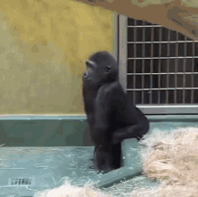
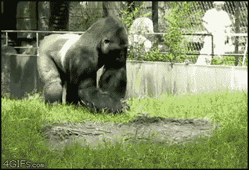
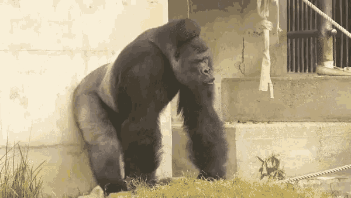
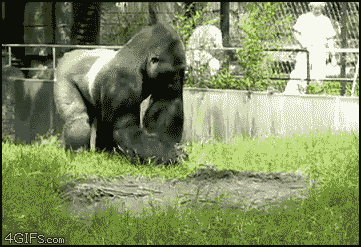
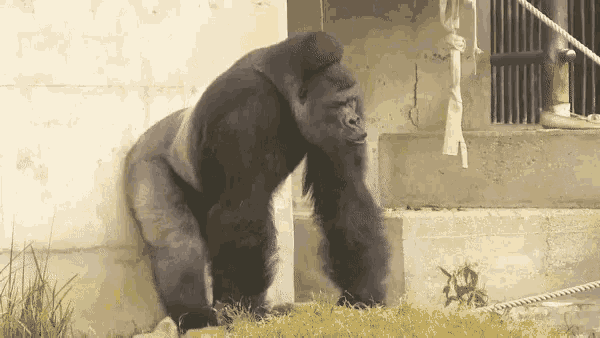
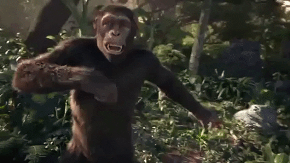
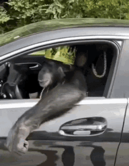
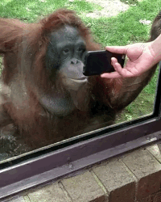
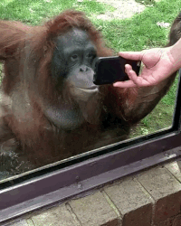

Free your mind, reject humanity return to*_
~ ~ * M O N K E * ~ ~
Die Gorillas sind eine Primatengattung aus der Familie der Menschenaffen. Sie sind die größten lebenden Primaten und die ausgeprägtesten Blätterfresser unter den Menschenaffen.
Sie sind durch ihr schwarzgraues Fell und den stämmigen Körperbau charakterisiert und leben in den mittleren Teilen Afrikas
   
 
Der Gemeine Schimpanse, auch Gewöhnlicher Schimpanse oder einfach nur Schimpanse genannt, ist eine Primatenart aus der Familie der Menschenaffen.
Zusammen mit dem Bonobo bildet er die Gattung der Schimpansen.
Beide Spezies sind die biologisch engsten Verwandten des Menschen.
  
Die Orang-Utans sind eine Primatengattung aus der Familie der Menschenaffen. Von den anderen Menschenaffen unterscheiden sie sich durch ihr rotbraunes
Fell und durch ihren stärker an eine baumbewohnende Lebensweise angepassten Körperbau.

 
